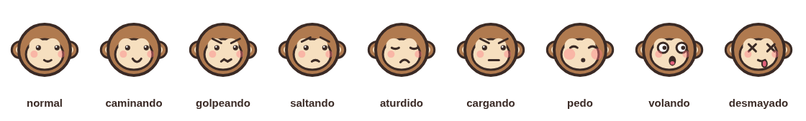
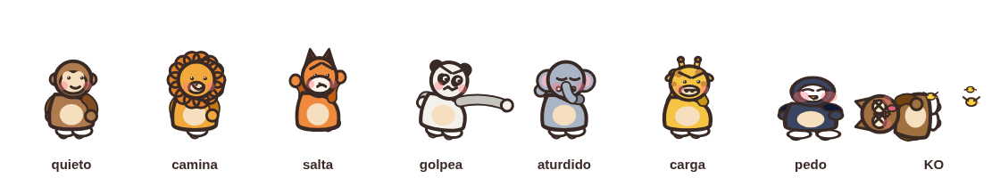

Expresiones y poses
La cara cuenta el estado del juego
Nueve caras, una por estado. Cambian solo ojos, cejas y boca; la cabeza no se redibuja. El desmayado lleva ojos en X, lengua fuera y pajaritos; el del pedo infla los cachetes.

